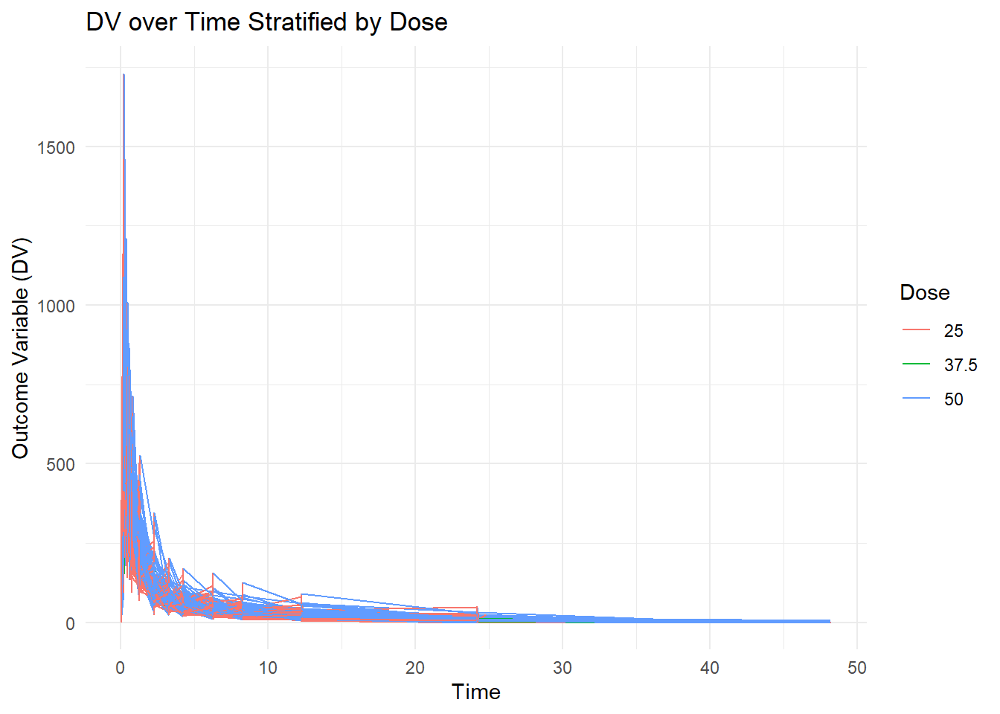
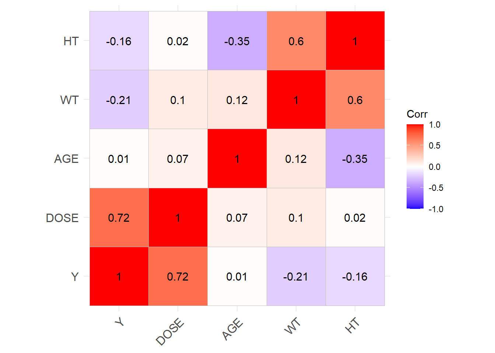
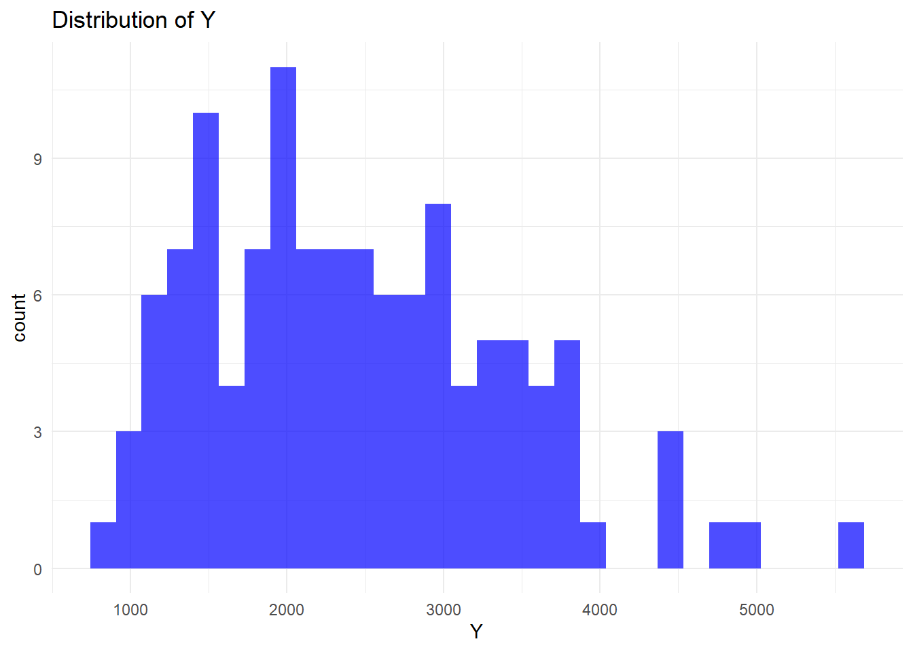
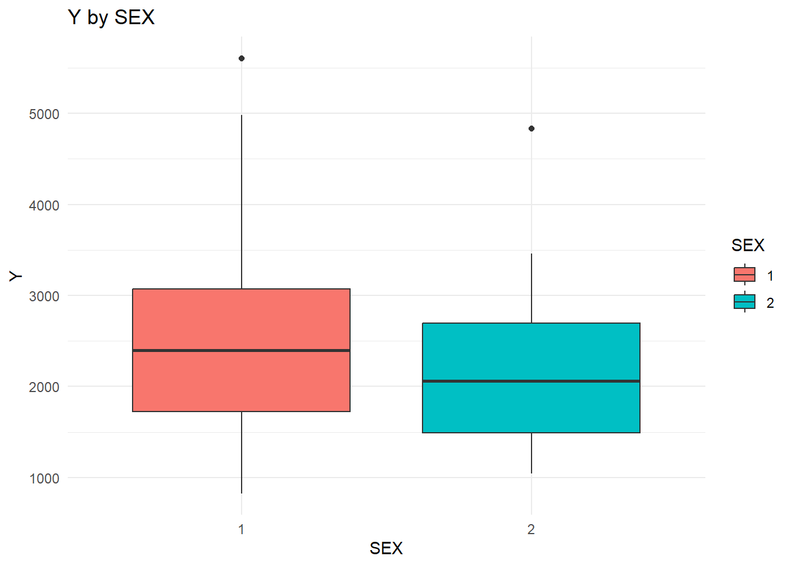
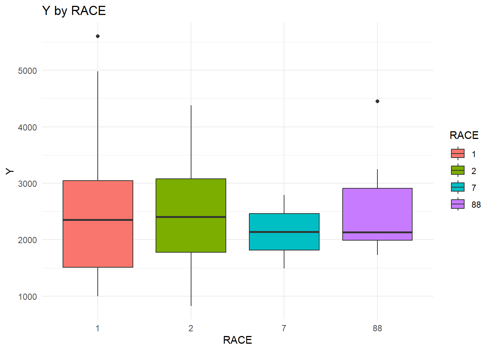
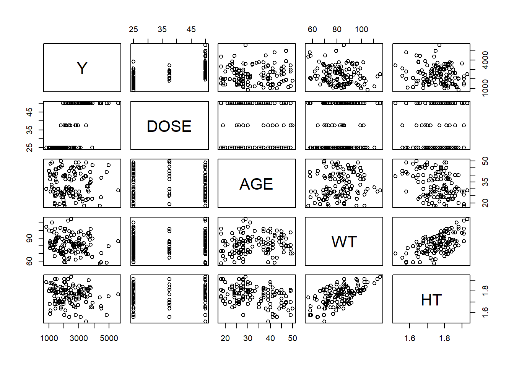
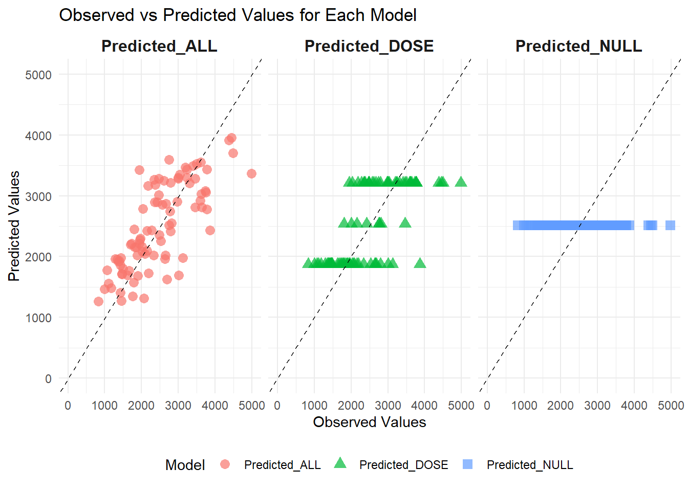
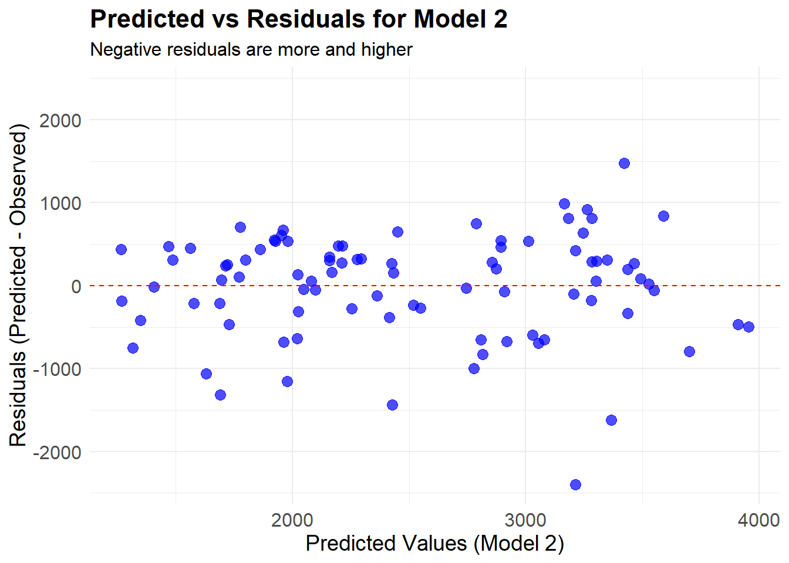
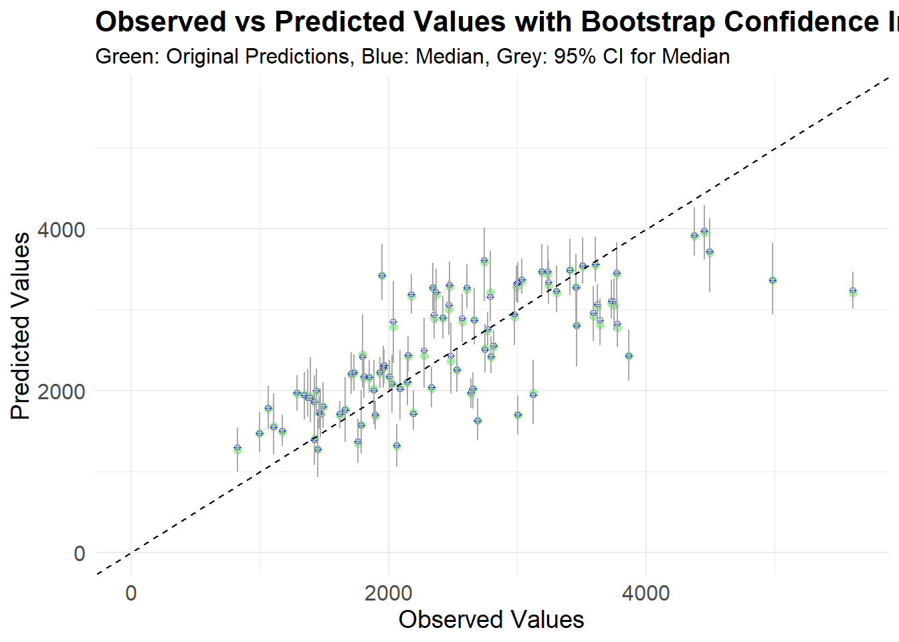

Warning: package 'stringr' was built under R version 4.4.3Warning: package 'Hmisc' was built under R version 4.4.3We shall start by loading a few packages that we think we might need for this data.
Warning: package 'stringr' was built under R version 4.4.3Warning: package 'Hmisc' was built under R version 4.4.3We shall start by loading the data set and the exploring it to see what it contains.
Rows: 2678 Columns: 17
── Column specification ────────────────────────────────────────────────────────
Delimiter: ","
dbl (17): ID, CMT, EVID, EVI2, MDV, DV, LNDV, AMT, TIME, DOSE, OCC, RATE, AG...
ℹ Use `spec()` to retrieve the full column specification for this data.
ℹ Specify the column types or set `show_col_types = FALSE` to quiet this message. [1] "ID" "CMT" "EVID" "EVI2" "MDV" "DV" "LNDV" "AMT" "TIME" "DOSE"
[11] "OCC" "RATE" "AGE" "SEX" "RACE" "WT" "HT" lets go through the data set and see what it entails.
Rows: 2,678
Columns: 17
$ ID <dbl> 793, 793, 793, 793, 793, 793, 793, 793, 793, 793, 793, 793, 793, …
$ CMT <dbl> 1, 2, 2, 2, 2, 2, 2, 2, 2, 2, 2, 2, 2, 2, 2, 2, 1, 2, 2, 2, 2, 2,…
$ EVID <dbl> 1, 0, 0, 0, 0, 0, 0, 0, 0, 0, 0, 0, 0, 0, 0, 0, 1, 0, 0, 0, 0, 0,…
$ EVI2 <dbl> 1, 0, 0, 0, 0, 0, 0, 0, 0, 0, 0, 0, 0, 0, 0, 0, 1, 0, 0, 0, 0, 0,…
$ MDV <dbl> 1, 0, 0, 0, 0, 0, 0, 0, 0, 0, 0, 0, 0, 0, 0, 0, 1, 0, 0, 0, 0, 0,…
$ DV <dbl> 0.00, 491.00, 605.00, 556.00, 310.00, 237.00, 147.00, 101.00, 72.…
$ LNDV <dbl> 0.000, 6.196, 6.405, 6.321, 5.737, 5.468, 4.990, 4.615, 4.282, 3.…
$ AMT <dbl> 25, 0, 0, 0, 0, 0, 0, 0, 0, 0, 0, 0, 0, 0, 0, 0, 25, 0, 0, 0, 0, …
$ TIME <dbl> 0.000, 0.200, 0.250, 0.367, 0.533, 0.700, 1.200, 2.200, 3.200, 4.…
$ DOSE <dbl> 25, 25, 25, 25, 25, 25, 25, 25, 25, 25, 25, 25, 25, 25, 25, 25, 2…
$ OCC <dbl> 1, 1, 1, 1, 1, 1, 1, 1, 1, 1, 1, 1, 1, 1, 1, 1, 1, 1, 1, 1, 1, 1,…
$ RATE <dbl> 75, 0, 0, 0, 0, 0, 0, 0, 0, 0, 0, 0, 0, 0, 0, 0, 150, 0, 0, 0, 0,…
$ AGE <dbl> 42, 42, 42, 42, 42, 42, 42, 42, 42, 42, 42, 42, 42, 42, 42, 42, 2…
$ SEX <dbl> 1, 1, 1, 1, 1, 1, 1, 1, 1, 1, 1, 1, 1, 1, 1, 1, 1, 1, 1, 1, 1, 1,…
$ RACE <dbl> 2, 2, 2, 2, 2, 2, 2, 2, 2, 2, 2, 2, 2, 2, 2, 2, 2, 2, 2, 2, 2, 2,…
$ WT <dbl> 94.3, 94.3, 94.3, 94.3, 94.3, 94.3, 94.3, 94.3, 94.3, 94.3, 94.3,…
$ HT <dbl> 1.769997, 1.769997, 1.769997, 1.769997, 1.769997, 1.769997, 1.769…The data set contains 2678 observations and 17 variables. code to make a plot that shows a line for each individual, with DV on the y-axis and time on the x-axis. Stratify by dose
Mavo_data%>%
ggplot(aes(x=TIME, y= DV, group = ID, color= factor(DOSE)))+
geom_line()+
labs(title = "DV over Time Stratified by Dose",
x = "Time",
y = "Outcome Variable (DV)",
color = "Dose") +
theme_minimal()
Keeping observations with OCC= 1
lets exclude everyone with everyone with time =0. and then create a another variable Y which is the sum of DV
summary_data <- Mavo_data2 %>%
filter(TIME != 0) %>% # Remove rows where TIME = 0
dplyr::group_by(ID) %>%
dplyr::summarize(Y = sum(DV, na.rm = TRUE), .groups = "drop") # Sum DV for each individual
print(summary_data) # A tibble: 120 × 2
ID Y
<dbl> <dbl>
1 793 2691.
2 794 2639.
3 795 2150.
4 796 1789.
5 797 3126.
6 798 2337.
7 799 3007.
8 800 2796.
9 801 3866.
10 802 1762.
# ℹ 110 more rowscreating a data frame that contains observations with time =0.
using an appropiate join function to combine the two data frames
Converting RACE and SEX to factor variables and keeping only these variables: Y,DOSE,AGE,SEX,RACE,WT,HT.
# Converting SEX to a factor
joined_data$SEX <- as.factor(joined_data$SEX)
# Converting race to a factor
joined_data$RACE <- as.factor(joined_data$RACE)
# Check the structure of the joined dataset using the str function
str(joined_data)tibble [120 × 18] (S3: tbl_df/tbl/data.frame)
$ ID : num [1:120] 793 794 795 796 797 798 799 800 801 802 ...
$ Y : num [1:120] 2691 2639 2150 1789 3126 ...
$ CMT : num [1:120] 1 1 1 1 1 1 1 1 1 1 ...
$ EVID: num [1:120] 1 1 1 1 1 1 1 1 1 1 ...
$ EVI2: num [1:120] 1 1 1 1 1 1 1 1 1 1 ...
$ MDV : num [1:120] 1 1 1 1 1 1 1 1 1 1 ...
$ DV : num [1:120] 0 0 0 0 0 0 0 0 0 0 ...
$ LNDV: num [1:120] 0 0 0 0 0 0 0 0 0 0 ...
$ AMT : num [1:120] 25 25 25 25 25 25 25 25 25 25 ...
$ TIME: num [1:120] 0 0 0 0 0 0 0 0 0 0 ...
$ DOSE: num [1:120] 25 25 25 25 25 25 25 25 25 25 ...
$ OCC : num [1:120] 1 1 1 1 1 1 1 1 1 1 ...
$ RATE: num [1:120] 75 150 150 150 150 150 150 150 150 150 ...
$ AGE : num [1:120] 42 24 31 46 41 27 23 20 23 28 ...
$ SEX : Factor w/ 2 levels "1","2": 1 1 1 2 2 1 1 1 1 1 ...
$ RACE: Factor w/ 4 levels "1","2","7","88": 2 2 1 1 2 2 1 4 2 1 ...
$ WT : num [1:120] 94.3 80.4 71.8 77.4 64.3 ...
$ HT : num [1:120] 1.77 1.76 1.81 1.65 1.56 ...finally, we need to select the variables that we shall need for our analaysis.
lets make some exploratory data analysis and some further cleaning
summary(final_data) #we use the summary function to see that summary statistics of each variable in the data set Y DOSE AGE SEX RACE
Min. : 826.4 Min. :25.00 Min. :18.00 1:104 1 :74
1st Qu.:1700.5 1st Qu.:25.00 1st Qu.:26.00 2: 16 2 :36
Median :2349.1 Median :37.50 Median :31.00 7 : 2
Mean :2445.4 Mean :36.46 Mean :33.00 88: 8
3rd Qu.:3050.2 3rd Qu.:50.00 3rd Qu.:40.25
Max. :5606.6 Max. :50.00 Max. :50.00
WT HT
Min. : 56.60 Min. :1.520
1st Qu.: 73.17 1st Qu.:1.700
Median : 82.10 Median :1.770
Mean : 82.55 Mean :1.759
3rd Qu.: 90.10 3rd Qu.:1.813
Max. :115.30 Max. :1.930 from the 120 observations,104 are males and 16 are females. thats if 1 is males and 2 is coded for females. According to the dataset we have, we are not sure since the code book was not provided.
# Compute summary statistics for all continuous variables
summary_table<- final_data %>%
select(where(is.numeric)) %>% # Select only numeric variables
summarise(
across(
everything(),
list(
Mean = ~mean(.x, na.rm = TRUE),
Median = ~median(.x, na.rm = TRUE),
SD = ~sd(.x, na.rm = TRUE),
Min = ~min(.x, na.rm = TRUE),
Max = ~max(.x, na.rm = TRUE)
),
.names = "{.col}_{.fn}" # Renaming format: VariableName_Statistic
)
) %>%
tidyr::pivot_longer(everything(), names_to = c("Variable", "Statistic"), names_sep = "_") %>%
tidyr::pivot_wider(names_from = "Statistic", values_from = "value")
# Print summary
print(summary_table)# A tibble: 5 × 6
Variable Mean Median SD Min Max
<chr> <dbl> <dbl> <dbl> <dbl> <dbl>
1 Y 2445. 2349. 962. 826. 5607.
2 DOSE 36.5 37.5 11.9 25 50
3 AGE 33 31 8.98 18 50
4 WT 82.6 82.1 12.5 56.6 115.
5 HT 1.76 1.77 0.0855 1.52 1.93lets check whether there is some correlation between variables
# Select only numeric columns
numeric_data <- final_data %>% select(where(is.numeric))
# Compute correlation matrix
cor_matrix <- cor(numeric_data, use = "complete.obs")
# Visualize correlation matrix
library(ggcorrplot)Warning: package 'ggcorrplot' was built under R version 4.4.3
From the above, looks like there is no variable that is highly correlated with the other.
lets explore our new variable Y using a histogram to see its distribution. we shall also try to explore Y by the categorical variables
# Histogram of Y variable (sum of DV)
ggplot(final_data, aes(x = Y)) +
geom_histogram(bins = 30, fill = "blue", alpha = 0.7) +
theme_minimal() +
labs(title = "Distribution of Y")
ggplot(final_data, aes(x = SEX, y = Y, fill = SEX)) +
geom_boxplot() +
theme_minimal() +
labs(title = "Y by SEX")
ggplot(final_data, aes(x = RACE, y = Y, fill = RACE)) +
geom_boxplot() +
theme_minimal() +
labs(title = "Y by RACE")
From the above, we see that Y is not normally distributed. it appears to be right skewed which means that some individuals have high sums of DV or simply we could have some potential outliers.
Also, assuming males are 1 and females are 2, then males have higher DV sums compared to females.
In regards to race, race 1 and 2 have almost similar DV sums compared to race 7 and 88.Though race 7 has higher sum compared to race 88.
lets see some scatter plot of Y as an outcome with the other continuous variables.
final_data %>%
select(Y, DOSE, AGE, WT, HT) %>%
pairs()#this code will show the scatter plots of the continuous variables in the data set.
We shall now start working on fitting the model using linear regression and logistic regression and the interprete the outputs. Fit a linear model to the continuous outcome (Y) using the main predictor of interest, which we’ll assume here to be DOSE. Fit a linear model to the continuous outcome (Y) using all predictors. For both models, compute RMSE and R-squared and print them.
#fitting a linear model with y as the outcome and dose as the predictor
model1<- lm(Y~DOSE,data=final_data)
summary(model1)
Call:
lm(formula = Y ~ DOSE, data = final_data)
Residuals:
Min 1Q Median 3Q Max
-1284.91 -441.14 -97.22 325.84 2372.87
Coefficients:
Estimate Std. Error t value Pr(>|t|)
(Intercept) 323.062 199.049 1.623 0.107
DOSE 58.213 5.194 11.208 <2e-16 ***
---
Signif. codes: 0 '***' 0.001 '**' 0.01 '*' 0.05 '.' 0.1 ' ' 1
Residual standard error: 672.1 on 118 degrees of freedom
Multiple R-squared: 0.5156, Adjusted R-squared: 0.5115
F-statistic: 125.6 on 1 and 118 DF, p-value: < 2.2e-16Lets try fitting Y with all the predictors.
Call:
lm(formula = Y ~ DOSE + AGE + SEX + RACE + WT + HT, data = final_data)
Residuals:
Min 1Q Median 3Q Max
-1480.86 -367.81 -79.95 266.15 2431.52
Coefficients:
Estimate Std. Error t value Pr(>|t|)
(Intercept) 3386.863 1835.153 1.846 0.067623 .
DOSE 59.935 4.880 12.281 < 2e-16 ***
AGE 3.155 7.825 0.403 0.687530
SEX2 -357.734 216.928 -1.649 0.101957
RACE2 155.034 128.627 1.205 0.230650
RACE7 -405.320 448.189 -0.904 0.367768
RACE88 -53.505 244.668 -0.219 0.827296
WT -23.047 6.395 -3.604 0.000471 ***
HT -748.487 1103.979 -0.678 0.499188
---
Signif. codes: 0 '***' 0.001 '**' 0.01 '*' 0.05 '.' 0.1 ' ' 1
Residual standard error: 614.3 on 111 degrees of freedom
Multiple R-squared: 0.6193, Adjusted R-squared: 0.5919
F-statistic: 22.57 on 8 and 111 DF, p-value: < 2.2e-16computing the RMSE and the R squared of the models
r_squared_model1 <- summary(model1)$r.squared
r_squared_model2 <- summary(model2)$r.squared
#computing the RMSE
rmse_model1 <- sqrt(mean(model1$residuals^2))
rmse_model2 <- sqrt(mean(model2$residuals^2))
#Printing the rsmes and the r-squared
print(paste("Model 1 - RMSE:", rmse_model1, "R-squared:", r_squared_model1))[1] "Model 1 - RMSE: 666.461786979191 R-squared: 0.515644568717372"[1] "Model 2 - RMSE: 590.853471477795 R-squared: 0.61930843824483"Fit a logistic model to the categorical/binary outcome (SEX) using the main predictor of interest, which we’ll again assume here to be DOSE. Fit a logistic model to SEX using all predictors. For both models, compute accuracy and ROC-AUC and print them.
Let us try to fit another model with sex as the outcome
# Fit logistic regression model with sex as the outcome and dose as the predictor.
logit_model1 <- glm(SEX ~ DOSE, data = final_data, family = binomial(link = "logit"))
# Fit logistic regression model with sex as the outcome and all the predictors.
logit_model2 <- glm(SEX ~ Y+ DOSE + AGE + RACE + WT + HT, data = final_data, family = binomial)
print(summary(logit_model1))
Call:
glm(formula = SEX ~ DOSE, family = binomial(link = "logit"),
data = final_data)
Coefficients:
Estimate Std. Error z value Pr(>|z|)
(Intercept) -0.76482 0.85395 -0.896 0.370
DOSE -0.03175 0.02432 -1.306 0.192
(Dispersion parameter for binomial family taken to be 1)
Null deviance: 94.242 on 119 degrees of freedom
Residual deviance: 92.431 on 118 degrees of freedom
AIC: 96.431
Number of Fisher Scoring iterations: 5
Call:
glm(formula = SEX ~ Y + DOSE + AGE + RACE + WT + HT, family = binomial,
data = final_data)
Coefficients:
Estimate Std. Error z value Pr(>|z|)
(Intercept) 6.033e+01 1.804e+01 3.345 0.000824 ***
Y -1.040e-03 9.628e-04 -1.081 0.279840
DOSE -3.076e-02 7.761e-02 -0.396 0.691893
AGE 8.340e-02 6.074e-02 1.373 0.169724
RACE2 -1.927e+00 1.375e+00 -1.402 0.160967
RACE7 1.176e-01 3.846e+00 0.031 0.975604
RACE88 -1.500e+00 2.195e+00 -0.683 0.494317
WT -6.283e-02 7.942e-02 -0.791 0.428908
HT -3.320e+01 1.108e+01 -2.995 0.002744 **
---
Signif. codes: 0 '***' 0.001 '**' 0.01 '*' 0.05 '.' 0.1 ' ' 1
(Dispersion parameter for binomial family taken to be 1)
Null deviance: 94.242 on 119 degrees of freedom
Residual deviance: 32.077 on 111 degrees of freedom
AIC: 50.077
Number of Fisher Scoring iterations: 8Let us try to calculate the odds ratios so as we can interprete these results better
# Extract the model coefficients for model 1
coefficients <- summary(logit_model1)$coefficients[, 1]
# Calculate the odds ratios by exponentiating the coefficients
odds_ratios <- exp(coefficients)
# Print the odds ratios
print(odds_ratios)(Intercept) DOSE
0.4654186 0.9687444 # Extract the model coefficients for model 2
coefficients <- summary(logit_model2)$coefficients[, 1]
# Calculate the odds ratios by exponentiating the coefficients
odds_ratios_2<- exp(coefficients)
# Print the odds ratios
print(odds_ratios_2) (Intercept) Y DOSE AGE RACE2 RACE7
1.580962e+26 9.989601e-01 9.697122e-01 1.086982e+00 1.455289e-01 1.124824e+00
RACE88 WT HT
2.231023e-01 9.391076e-01 3.829605e-15 we shall then compute the accuracy and ROC-AUC and print them.
# Model with only DOSE
predicted_probs1 <- predict(logit_model1, type = "response") # Probabilities for SEX
# Model with all predictors
predicted_probs2 <- predict(logit_model2, type = "response")
# Convert probabilities to binary class (0 or 1)
predicted_class1 <- ifelse(predicted_probs1 > 0.5, 1, 0)
predicted_class2 <- ifelse(predicted_probs2 > 0.5, 1, 0)
# Accuracy calculation
accuracy1 <- mean(predicted_class1 == final_data$SEX)
accuracy2 <- mean(predicted_class2 == final_data$SEX)
print(paste("Logit mode 1 - Accuracy:", accuracy1))[1] "Logit mode 1 - Accuracy: 0"[1] "Logit Model 2 - Accuracy: 0.025"Computing the ROC-AUC
Type 'citation("pROC")' for a citation.
Attaching package: 'pROC'The following objects are masked from 'package:stats':
cov, smooth, varSetting levels: control = 1, case = 2Setting direction: controls < casesSetting levels: control = 1, case = 2
Setting direction: controls < cases[1] "Logit Model 1 - AUC: 0.591947115384615"[1] "Logit Model 2 - AUC: 0.979567307692308"We fitted the data to a linear model and a logistic regression model. When we fitted the linear regression model to the data, in the first model, we found that DOSE is a strong predictor of Y:
The coefficient (Estimate = 58.213) suggests that for every unit increase in DOSE, Y increases by approximately 58.21. This effect is highly significant (p < 2e-16), meaning there is strong evidence that DOSE impacts Y.
Looking at the R-squared of this first linear model, we found that the simple linear model had an R-squared = 0.5156, meaning 51.56% of the variance in Y is explained by DOSE alone.
While DOSE is a significant predictor, the model might be too simple, as nearly half of the variation in Y is not explained which suggests that other variables might be important. As a result, we decided to fit the second linear model but this time around with other variables. Second Model: Y ~ DOSE + AGE + SEX + RACE + WT + HT DOSE remains a strong predictor:
The coefficient (Estimate = 59.935) is similar to the first model and still highly significant (p < 2e-16).
Additional variables:
WT (Weight) is also significant (p = 0.000471), with a negative coefficient (-23.047), suggesting that a unit increase in weight decreases, Y. SEX, AGE, and RACE do not contribute meaningful to prediction to Y in this dataset. HT (Height) also does not appear to impact Y.
Model fit improved:
R-squared increased to 0.6193, meaning 61.93% of Y’s variance is explained by this model—better than the first model. In conclusion, DOSE remains the strongest predictor in both models, Adding more variables improves model fit, but only WT shows a significant effect in addition to DOSE.
Secondly,when we fitted a logistic regression with sex as the main outcome, first we fitted the model with only dose as a predictor
The coefficient for DOSE is -0.03175, meaning that as DOSE increases, the log-odds of the outcome (SEX) decrease slightly, but this effect is not statistically significant (p = 0.192). The Intercept represents the baseline log-odds when DOSE = 0.
We fitted the second model with sex as the outcome this time round with other predictors. That is to say, SEX ~ Y + DOSE + AGE + RACE + WT + HT. This is a multivariable logistic regression, including multiple predictors. HT (Height) has a significant negative association with SEX (Estimate = -33.2, p = 0.0027). This suggests that an increase in height strongly decreases the log-odds of the outcome.
Other variables (Y, DOSE, AGE, RACE, WT) do not have significant p-values (> 0.05), meaning their effects are not strong enough to conclude they impact SEX.
Looking at the residual Deviance (32.077) is much lower than in the first model (92.431), suggesting the second model explains the data much better. AIC (50.077) in this second model is significantly lower than the first model’s AIC (96.431), meaning the second model fits better.
In conclusion, large AUC gap (0.592 vs. 0.980) confirms that adding more predictors greatly improves the model’s ability to differentiate between classes. The model with more predictors has better predictive power and is better.
[1] "Y" "DOSE" "AGE" "SEX" "WT" "HT" ── Attaching packages ────────────────────────────────────── tidymodels 1.2.0 ──✔ broom 1.0.7 ✔ rsample 1.2.1
✔ dials 1.3.0 ✔ tune 1.2.1
✔ infer 1.0.7 ✔ workflows 1.1.4
✔ modeldata 1.4.0 ✔ workflowsets 1.1.0
✔ parsnip 1.2.1 ✔ yardstick 1.3.1
✔ recipes 1.1.0 ── Conflicts ───────────────────────────────────────── tidymodels_conflicts() ──
✖ scales::discard() masks purrr::discard()
✖ dplyr::filter() masks stats::filter()
✖ recipes::fixed() masks stringr::fixed()
✖ dplyr::lag() masks stats::lag()
✖ yardstick::spec() masks readr::spec()
✖ Hmisc::src() masks dplyr::src()
✖ recipes::step() masks stats::step()
✖ Hmisc::summarize() masks dplyr::summarize()
✖ parsnip::translate() masks Hmisc::translate()
• Use suppressPackageStartupMessages() to eliminate package startup messages#setting seed
set.seed(1234)
# Put 3/4 of the data into the training set
data_split <- initial_split(final_data2, prop = 3/4)
# Create data frames for the two sets:
train_data <- training(data_split)
test_data <- testing(data_split)
# Check dimensions to ensure the data has been split successfully.
dim(train_data)[1] 90 6[1] 30 6fitting the linear models using the train data.
train_model<-lm(Y~DOSE, data = train_data)
train_model2<-lm(Y~DOSE+AGE + SEX +WT + HT , data = train_data)
train_null <-lm(Y~ 1, data = train_data)
summary(train_model)
Call:
lm(formula = Y ~ DOSE, data = train_data)
Residuals:
Min 1Q Median 3Q Max
-1257.85 -492.00 -71.31 370.71 2399.93
Coefficients:
Estimate Std. Error t value Pr(>|t|)
(Intercept) 535.455 244.017 2.194 0.0308 *
DOSE 53.424 6.286 8.499 4.41e-13 ***
---
Signif. codes: 0 '***' 0.001 '**' 0.01 '*' 0.05 '.' 0.1 ' ' 1
Residual standard error: 710.7 on 88 degrees of freedom
Multiple R-squared: 0.4508, Adjusted R-squared: 0.4446
F-statistic: 72.23 on 1 and 88 DF, p-value: 4.406e-13
Call:
lm(formula = Y ~ DOSE + AGE + SEX + WT + HT, data = train_data)
Residuals:
Min 1Q Median 3Q Max
-1474.2 -438.0 -119.7 330.2 2394.6
Coefficients:
Estimate Std. Error t value Pr(>|t|)
(Intercept) 4396.7716 2169.6373 2.027 0.0459 *
DOSE 55.3445 5.8310 9.491 6.09e-15 ***
AGE -0.4174 9.5029 -0.044 0.9651
SEX2 -568.9967 285.4443 -1.993 0.0495 *
WT -22.6399 7.6499 -2.960 0.0040 **
HT -1129.6696 1358.3998 -0.832 0.4080
---
Signif. codes: 0 '***' 0.001 '**' 0.01 '*' 0.05 '.' 0.1 ' ' 1
Residual standard error: 649.5 on 84 degrees of freedom
Multiple R-squared: 0.5623, Adjusted R-squared: 0.5362
F-statistic: 21.58 on 5 and 84 DF, p-value: 7.9e-14lets evaluate performance and see how these two models work on the training data
# Generate predictions on training data
#For null mode
pred_null<- predict(train_null, train_data)
# For model 1 (dose only)
pred_model1 <- predict(train_model, train_data)
# For model 2 (all predictors)
pred_model2 <- predict(train_model2, train_data)
# Let's Calculate RMSE for each model
# First, get the actual outcome values
actual_values <- train_data$Y
# Calculate RMSE manually for null model
rmse_null <- sqrt(mean((actual_values - pred_null)^2))
# Calculate RMSE manually for model 1
rmse_model1 <- sqrt(mean((actual_values - pred_model1)^2))
# Calculate RMSE manually for model 2
rmse_model2 <- sqrt(mean((actual_values - pred_model2)^2))
# Print results
cat("RMSE for null model :", rmse_null, "\n")RMSE for null model : 948.3526 RMSE for model with dose only: 702.8078 RMSE for model with all predictors: 627.4408 According to the values of the RMSE, we see that the model with all predictors is performing well since its has the smallest value of the RMSE.
Lets try using the cv method
library(rsample)
# Create 10-fold CV object
folds <- vfold_cv(train_data, v = 10)
# Define model specifications
lm_spec <- linear_reg() %>%
set_engine("lm")
# Model 1: Dose only model
model1_formula <- Y ~ DOSE # Replace 'outcome' with your actual outcome variable name
# Model 2: All predictors
model2_formula <- Y ~ . # Replace 'outcome' with your actual outcome variable name
# Function to evaluate a model with CV
cv_evaluate <- function(formula, model_spec, folds_obj) {
# Fit the model to each fold and evaluate
cv_results <- folds_obj %>%
mutate(
# Fit model on analysis set
model = map(splits, ~model_spec %>%
fit(formula, data = analysis(.x))),
# Make predictions and calculate RMSE on assessment set
pred = map2(model, splits, ~predict(.x, new_data = assessment(.y))),
rmse = map2_dbl(pred, splits, ~rmse_vec(
truth = assessment(.y)[[all.vars(formula)[1]]],
estimate = .x$.pred
))
)
# Return the results
return(cv_results)
}
# Apply CV to both models
cv_results_model1 <- cv_evaluate(model1_formula, lm_spec, folds)
cv_results_model2 <- cv_evaluate(model2_formula, lm_spec, folds)
# Calculate mean RMSE across all folds
mean_rmse_model1 <- mean(cv_results_model1$rmse)
mean_rmse_model2 <- mean(cv_results_model2$rmse)
# Calculate standard errors
se_rmse_model1 <- sd(cv_results_model1$rmse) / sqrt(10)
se_rmse_model2 <- sd(cv_results_model2$rmse) / sqrt(10)
# Print results
cat("Model 1 (dose only) - CV Results:\n")Model 1 (dose only) - CV Results: Mean RMSE: 691.2123 Standard Error: 69.81814 Model 2 (all predictors) - CV Results: Mean RMSE: 639.8914 Standard Error: 72.42021 Model 1 - RMSE for each fold: [1] 646.3712 1147.0091 959.4708 505.9775 707.5676 707.4310 562.7030
[8] 415.8754 735.4318 524.2853
Model 2 - RMSE for each fold: [1] 613.6833 951.8855 1013.5318 760.2155 686.1963 670.7323 569.6953
[8] 332.0084 365.3981 435.5673Comparing the RMSE for CV With the previous RMS.
For model 1, the previous RMSE is 702.8078 while the cv RMSE is is 676.8427 For model 2, the previous RMSE is 627.441 while the cv RMSE is is 625.9641
What changed and what did not change.
we see that there was a change in the RMSE for model 1 when we used the cross validation technique. The values of RSME dropped. However, there were no major changes in the the RSME in model two. The valued still reduced but by only 2 units.
What didn’t change:
The null model RMSE remains the same regardless of the evaluation method since it always predicts the same value which is the mean.
Standard errors:
Model 2 has a lower standard error compared to model1 which contains only dose as a predictor. This shows that model 2 has a better variability in model performance across different subsets of data.
lets set another seed.
# Set a different random number seed
set.seed(4567) # Using a different seed than before
# Create new 10-fold CV object with the new seed
new_folds <- vfold_cv(train_data, v = 10)
# Apply CV to both models using the new folds
cv_results_model1_new <- cv_evaluate(model1_formula, lm_spec, new_folds)
cv_results_model2_new <- cv_evaluate(model2_formula, lm_spec, new_folds)
# Calculate mean RMSE across all folds with new seed
mean_rmse_model1_new <- mean(cv_results_model1_new$rmse)
mean_rmse_model2_new <- mean(cv_results_model2_new$rmse)
# Calculate standard errors with new seed
se_rmse_model1_new <- sd(cv_results_model1_new$rmse) / sqrt(10)
se_rmse_model2_new <- sd(cv_results_model2_new$rmse) / sqrt(10)
# Print comparison of results with different seeds
cat("Comparison of CV results with different random seeds:\n\n")Comparison of CV results with different random seeds:Model 1 (dose only): - Mean RMSE with seed 1234: 691.2123 - Mean RMSE with seed 4567: 705.3799 - Difference: 14.16766 - Standard Error with seed 1234: 69.81814 - Standard Error with seed 4567: 55.28695 Model 2 (all predictors): - Mean RMSE with seed 1234: 639.8914 - Mean RMSE with seed 4567: 650.1592 - Difference: 10.26786 - Standard Error with seed 1234: 72.42021 - Standard Error with seed 4567: 57.96715 # Check if the conclusion about which model is better remains the same
better_model_seed123 <- ifelse(mean_rmse_model1 < mean_rmse_model2, "Model 1", "Model 2")
better_model_seed456 <- ifelse(mean_rmse_model1_new < mean_rmse_model2_new, "Model 1", "Model 2")
cat("Better performing model:\n")Better performing model: - With seed 1234: Model 2 - With seed 4567: Model 2 The overall performing model is still model 2 that has all the predictors. The changes we see are due to randomness maybe because of the seed change but generally, model 2 is still performing better than model 1.
WE will first define the three models:
# Fitting the models
train_model <- lm(Y ~ DOSE, data = train_data) #model1
train_model2 <- lm(Y ~ DOSE + AGE + SEX + WT + HT, data = train_data) #model2
train_null <- lm(Y ~ 1, data = train_data) #model3
# Generating predictions for each model
train_data$pred_model1 <- predict(train_model, newdata = train_data)
train_data$pred_model2 <- predict(train_model2, newdata = train_data)
train_data$pred_null <- predict(train_null, newdata = train_data)
# Creating a data frame with observed and predicted values for three models
results <- data.frame(
Observed = train_data$Y,
Predicted_DOSE = train_data$pred_model1,
Predicted_ALL = train_data$pred_model2,
Predicted_NULL = train_data$pred_null)
# printing the results
head(results) Observed Predicted_DOSE Predicted_ALL Predicted_NULL
1 3004.21 3206.650 3303.028 2509.171
2 1346.62 1871.052 1952.556 2509.171
3 2771.69 2538.851 2744.878 2509.171
4 2027.60 1871.052 2081.182 2509.171
5 2353.40 3206.650 2894.205 2509.171
6 826.43 1871.052 1264.763 2509.171The predicted values can be observed in the above table.
# Reshaping the data into long format for ggplot plotting
results_long <- results %>%
pivot_longer(
cols = starts_with("Predicted_"),
names_to = "Model",
values_to = "Predicted"
)
# Creating the plot
ggplot(results_long, aes(x = Observed, y = Predicted, color = Model, shape = Model)) +
geom_point(size = 3, alpha = 0.7) + # Adding points for observed vs predicted
geom_abline(slope = 1, intercept = 0, linetype = "dashed", color = "black") + # Add 45-degree line
facet_wrap(~ Model, ncol = 3) + # using facet by model
scale_x_continuous(limits = c(0, 5000)) + # setting x-axis limits
scale_y_continuous(limits = c(0, 5000)) + # setting y-axis limits
labs(
x = "Observed Values",
y = "Predicted Values",
title = "Observed vs Predicted Values for Each Model",
color = "Model",
shape = "Model"
) +
theme_minimal() +
theme(
legend.position = "bottom",
strip.text = element_text(size = 12, face = "bold")
)Warning: Removed 3 rows containing missing values or values outside the scale range
(`geom_point()`).
We can observe that the model with all predictors shows a better fit and less deviance between observed and the predicted values.The DOSE has three categories and only takes three values, thus shows a band of three. The prediction for NULL model is linear as we fitted the model with a constant.
# adding predictions and residuals to the data
results <- results %>% mutate(Residuals_Model2 = Predicted_ALL - Observed)
# creating the plot
ggplot(results, aes(x = Predicted_ALL, y = Residuals_Model2)) +
geom_point(size = 3, alpha = 0.7, color = "blue") + # adding points for predicted vs residuals
geom_hline(yintercept = 0, linetype = "dashed", color = "red") + # Add horizontal line at 0
labs(
x = "Predicted Values (Model 2)",
y = "Residuals (Predicted - Observed)",
title = "Predicted vs Residuals for Model 2",
subtitle = "Negative residuals are more and higher"
) +
scale_y_continuous(limits = c(-max(abs(results$Residuals_Model2)), max(abs(results$Residuals_Model2)))) +
theme_minimal() +
theme(
plot.title = element_text(size = 16, face = "bold"),
plot.subtitle = element_text(size = 12),
axis.title = element_text(size = 14),
axis.text = element_text(size = 12)
)
# Loading libraries
library(rsample)
library(dplyr)
library(purrr)
# set the random seed back to rngseed
set.seed(1234)
# Create 100 bootstrap samples from the training data
boot_samples <- bootstraps(train_data, times = 100)
# defining a function to fit Model 2 and make predictions
fit_and_predict <- function(split) {
# saving the bootstrap sample
bootstrap_data <- analysis(split)
# fitting Model 2 (Y ~ DOSE + AGE + SEX + WT + HT) to the bootstrap sample
model2 <- lm(Y ~ DOSE + AGE + SEX + WT + HT, data = bootstrap_data)
# making predictions for the original training data
predict(model2, newdata = train_data)
}
# using the function to each bootstrap sample and store predictions
predictions_list <- map(boot_samples$splits, fit_and_predict)
# converting the list of predictions to a matrix (array)
predictions_matrix <- do.call(rbind, predictions_list)
# calculating median and 95% confidence intervals for each data point
pred_summary <- predictions_matrix |>
apply(2, quantile, probs = c(0.025, 0.5, 0.975)) |>
t() |>
as.data.frame() |>
setNames(c("Lower_CI_Median", "Pred_Median", "Upper_CI_Median"))
# calulating mean and 95% confidence intervals for each data point
mean_ci <- predictions_matrix |>
apply(2, function(x) {
mean_val <- mean(x)
se <- sd(x) / sqrt(length(x)) # standard error of the mean
lower_ci <- mean_val - 1.96 * se # 95% CI lower bound
upper_ci <- mean_val + 1.96 * se # 95% CI upper bound
c(lower_ci, mean_val, upper_ci)
}) |>
t() |>
as.data.frame() |>
setNames(c("Lower_CI_Mean", "Pred_Mean", "Upper_CI_Mean"))
# merging median and mean summaries
pred_summary <- cbind(pred_summary, mean_ci)
# adding the observed values from the training data
pred_summary$Observed <- train_data$Y
# printing the updated summary
head(pred_summary) Lower_CI_Median Pred_Median Upper_CI_Median Lower_CI_Mean Pred_Mean
1 3083.086 3335.818 3586.619 3298.832 3327.341
2 1645.772 1945.359 2232.636 1912.742 1944.126
3 2556.181 2764.634 2974.479 2737.023 2757.878
4 1722.745 2085.856 2435.738 2034.530 2073.550
5 2645.607 2933.091 3197.893 2883.842 2914.454
6 1001.184 1298.528 1547.160 1254.406 1283.881
Upper_CI_Mean Observed
1 3355.850 3004.21
2 1975.511 1346.62
3 2778.734 2771.69
4 2112.570 2027.60
5 2945.066 2353.40
6 1313.356 826.43The confidence interval for both the predicted median and mean is presented in the table above along with the observed value.
# adding the original predictions to the summary table
pred_summary$Original_Predictions <- predict(lm(Y ~ DOSE + AGE + SEX + WT + HT, data = train_data), newdata = train_data)
# reating the plot
ggplot(pred_summary, aes(x = Observed)) +
geom_point(aes(y = Original_Predictions), color = "lightgreen", size = 2, alpha = 0.8, shape = 16) + # Original predictions (point estimate)
geom_point(aes(y = Pred_Median), color = "blue", size = 1.5, alpha = 0.8, shape = 10) + # Median of bootstrap predictions (as points)
geom_errorbar(aes(ymin = Lower_CI_Median, ymax = Upper_CI_Median), color = "darkgrey", width = 0.2) + # 95% CI for median
geom_abline(slope = 1, intercept = 0, linetype = "dashed", color = "black") + # 45-degree line
labs(
x = "Observed Values",
y = "Predicted Values",
title = "Observed vs Predicted Values with Bootstrap Confidence Intervals",
subtitle = "Green: Original Predictions, Blue: Median, Grey: 95% CI for Median"
) +
scale_x_continuous(limits = c(0, max(pred_summary$Observed, pred_summary$Upper_CI_Median))) + # x-axis limits
scale_y_continuous(limits = c(0, max(pred_summary$Observed, pred_summary$Upper_CI_Median))) + #y-axis limits
theme_minimal() +
theme(
plot.title = element_text(size = 16, face = "bold"),
plot.subtitle = element_text(size = 12),
axis.title = element_text(size = 14),
axis.text = element_text(size = 12)
)
The median predictions obtained from bootstrapping procedure are almost simiar and overlap with the original predictions. A lot of the CI seem to cross the 45 degree line which means that the predicted and observed were fairly similar.However, the predicted values are mostly higher as they lie above the 45-degree line.